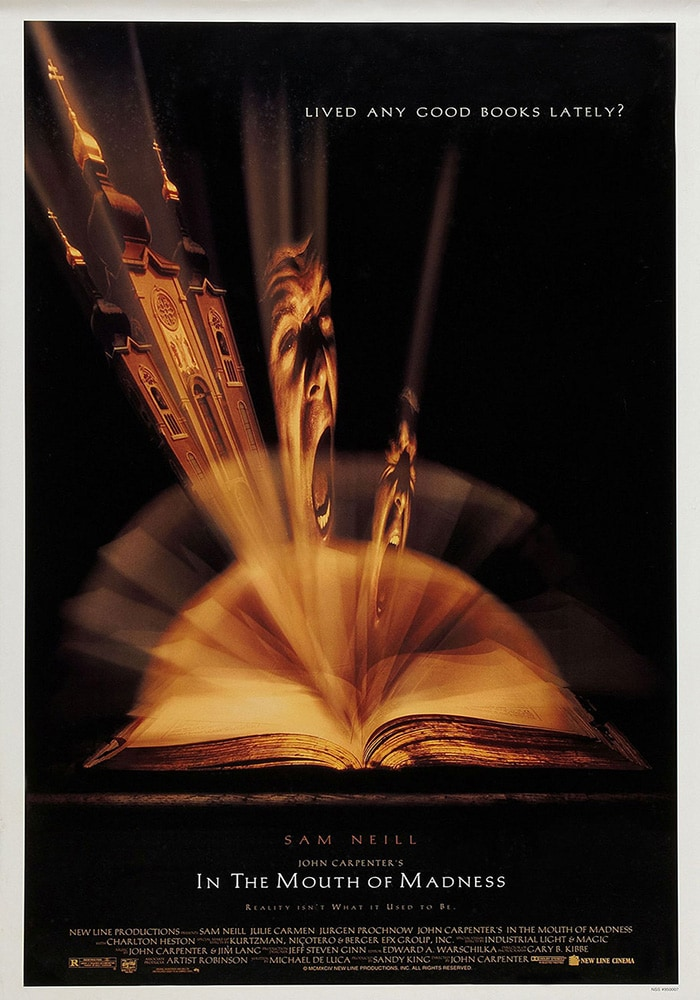

Programmation
Découvrez ci-dessous l'intégralité de notre sélection, jour par jour. N'hésitez-pas à vous pré-inscrire, afin que nous puissions vous garantir une place et préparer au mieux l'organisation du festival.
Mulholand Drive
Jeudi 5 août - 18h
Réalisé par David Lynch - Sorti le 21 novembre 2001
- Synopsis
- À Hollywood, durant la nuit, Rita, une jeune femme, devient amnésique suite à un accident de voiture sur la route de Mulholland Drive. Elle fait la rencontre de Betty Elms, une actrice en devenir qui vient juste de débarquer à Los Angeles. Aidée par celle-ci, Rita tente de retrouver la mémoire ainsi que son identité.
- Avec
-
- Naomi Watts
- Laura Harring
- Justin Theroux
- Genres
-
- Fantastique
- Thriller
- Drame
- Bizarre
- Notre avis
- Aussi étrange qu'hypnotisant, ce film de David Lynch ne peut laisser indifférent.
- Fiche Allociné

Les Garçons Sauvages
Jeudi 5 août - 20h
Réalisé par Bertrand Mandico - Sorti le 28 février 2017
- Synopsis
- Début du vingtième siècle, cinq adolescents de bonne famille épris de liberté commettent un crime sauvage. Ils sont repris en main par le Capitaine, le temps d'une croisière répressive sur un voilier. Les garçons se mutinent. Ils échouent sur une île sauvage où se mêlent plaisir et végétation luxuriante. La métamorphose peut commencer…
- Avec
-
- Vimala Pons
- Anaël Snoek
- Pauline Lorillard
- Genres
-
- Fantastique
- Bizarre
- Notre avis
- Une véritable bouffée d'air frais dans le paysage audiovisuel français... À ne pas manquer !
- Fiche Allociné
Vital
Jeudi 5 août - 22h
Réalisé par Shinya Tsukamoto - Sorti le 24 janvier 2006
- Synopsis
- Après un tragique accident qui lui a enlevé sa fiancée, Hiroshi Takagi a perdu la mémoire. Seule lui reste sa passion pour la médecine. Il entame alors des études dans la voie médicale, mais se retrouve confronté au corps de son amie sur la table de dissection.
- Avec
-
- Tadanobu Asano
- Nami Tsukamoto
- Toulou Kiki
- Genres
-
- Drame
- Notre avis
- Un drame morbide et poétique qui montre une facette différente de l'œuvre de Tsukamoto.
- Fiche Allociné
Clerks
Vendredi 6 août - 18h
Réalisé par Kevin Smith - Sorti en 1994
- Synopsis
- Dante est caissier dans une épicerie du New Jersey. Randal est employé dans le vidéo-club voisin. Les deux amis débattent regulièrement des sujets les plus divers. Et parfois, la routine laisse place à des journées pour le moins étonnantes...
- Avec
-
- Brian O'Halloran
- Jeff Anderson
- Jason Mewes
- Genre
-
- Comédie
- Notre avis
- Une comédie décapatante qui marque le début de carrière de Kevin Smith et pose toutes les bases de son humour.
- Fiche Allociné

L'Au-delà
Vendredi 6 août - 20h
Réalisé par Lucio Fulci - Sorti en 1981
- Synopsis
- Une jeune femme hérite d'un hôtel dans la Nouvelle Orléans. Alors qu'elle entreprend des travaux de rénovation, des phénomènes étranges font de sa vie un véritable enfer.
- Avec
-
- Catriona MacColl
- David Warbeck
- Cinzia Monreale
- Genre
-
- Horreur
- Notre avis
- Un grand classique du cinéma gore italien ! Aussi beau qu'il en est graphiquement très violent...
- Fiche Allociné
Seul contre tous
Vendredi 6 août - 22h
Réalisé par Gaspar Noé - Sorti le 17 février 1999
- Synopsis
- La dérive d'un ex-boucher chevalin, d'abord à Lille, puis à Paris où il s'installe à l'hôtel de l'Avenir et tente de refaire sa vie. Peu à peu, il se replie sur lui-même. Sans un sou et avec pour seul compagnon un révolver chargé de trois balles, il ne voit plus clairement quel est le moteur de sa vie. Au bout du tunnel, l'imprévu surgit toujours.
- Avec
-
- Philippe Nahon
- Blandine Lenoir
- Frankie Pain
- Genre
-
- Drame
- Notre avis
- Ce premier long-métrage de Gaspar Noé est une vraie claque qui ne peut tout simplement pas laisser indifférent. Attention, le moral en prend un coup...
- Fiche Allociné
L'Île aux Chiens
Samedi 7 août - 18h
Réalisé par Wes Anderson - Sorti le 11 avril 2018
- Synopsis
- En raison d’une épidémie de grippe canine, le maire de Megasaki ordonne la mise en quarantaine de tous les chiens de la ville, envoyés sur une île qui devient alors l’Ile aux Chiens. Le jeune Atari, 12 ans, vole un avion et se rend sur l’île pour rechercher son fidèle compagnon, Spots. Aidé par une bande de cinq chiens intrépides et attachants, il découvre une conspiration qui menace la ville.
- Doubleurs
-
- Bryan Cranston
- Edward Norton
- Jeff Goldblum
- Genre
-
- Aventure
- Notre avis
- Aussi beau que brillant et bien écrit, ce dernier film de Wes Anderson est rapidement devenu un incontournable du cinéma d'animation !
- Fiche Allociné

Suspiria
Samedi 7 août - 20h
Réalisé par Dario Argento - Sorti le 18 mai 1977
- Synopsis
- Suzy, une jeune Américaine, débarque à Fribourg pour suivre des cours dans une académie de danse prestigieuse. À peine arrivée, l'atmosphère du lieu, étrange et inquiétante, surprend la jeune fille. Et c'est là qu'une jeune élève est spectaculairement assassinée. Suzy apprend alors que l'académie était autrefois la demeure d'une terrible sorcière surnommée la Mère des Soupirs. Et si l'école était encore sous son emprise ?
- Avec
-
- Jessica Harper
- Joan Bennett
- Stefania Casini
- Genres
-
- Horreur
- Thriller
- Notre avis
- Dario Argento nous présente ici son film le plus soigné : c'est un festival de sang et de couleurs. Mais la musique n'est pas en reste avec une excellente OST du groupe Goblin !
- Fiche Allociné
L'Antre de la folie
Samedi 7 août - 22h
Réalisé par John Carpenter - Sorti le 8 février 1995
- Synopsis
- Pour retrouver un auteur de best-sellers d'épouvante brusquement disparu, John Trent, détéctive, va pénétrer dans l'univers romanesque et épouvantable de l'écrivain.
- Avec
-
- Sam Neill
- Jürgen Prochnow
- David Warner
- Genres
-
- Horreur
- Thriller
- Notre avis
- Sans aucun doute l'une des plus pertinentes adaptations de Lovecraft au cinéma, et aussi l'un des derniers grands films du maître de l'horreur, John Carpenter !
- Fiche Allociné

Hana-Bi
Dimanche 8 août - 18h
Réalisé par Takeshi Kitano - Sorti le 5 novembre 1997
- Synopsis
- Nishi est policier. Son épouse est atteinte d’un cancer en phase terminale. Suite à une fusillade son partenaire Horibe devient paraplégique et un autre de ses collègues est tué. Nishi démissionne alors afin de commettre un casse pour rembourser d’importantes dettes contractées auprès des yakuzas et, finalement, chercher un sens à sa vie…
- Avec
-
- Takeshi Kitano
- Tetsu Watanabe
- Kayoko Kishimoto
- Genre
-
- Drame
- Notre avis
- Kitano au sommet de son art, avec toujours ce mélange de poésie et de violence parfaitement équilibré.
- Fiche Allociné

Videodrome
Dimanche 8 août - 20h
Réalisé par David Cronenberg - Sorti le 16 mai 1984
- Synopsis
- Le patron d'une petite chaîne érotique sur le câble capte par hasard un mystérieux programme-pirate dénommé Vidéodrome, qui met en scène tortures et sévices sexuels. Son visionnage provoque peu à peu des hallucinations et autres altérations physiques. La frontière entre réalité et univers télévisuel devient bien mince, et la folie guette...
- Avec
-
- James Woods
- Sonja Smits
- Deborah Harry
- Genres
-
- Horreur
- Fantastique
- Notre avis
- Le maître du body-horror à son sommet. Un film intemporel et vertigineux.
- Fiche Allociné
Possession
Dimanche 8 août - 22h
Réalisé par Andrzej Zulawski - Sorti le 27 mai 1981
- Synopsis
- Rentrant d'un long voyage, Marc retrouve à Berlin sa femme Anna et son fils, Bob. Mais rapidement, il se rend compte que le comportement de sa femme a changé. Prise de violentes crises, elle quitte le domicile. Lorsqu'elle disparaît, Marc engage un détective qui découvre bientôt qu'Anna s'est réfugiée dans une étrange demeure où semble se cacher une créature surgie des ténèbres.
- Avec
-
- Isabelle Adjani
- Sam Neill
- Margit Carstensen
- Genres
-
- Drame
- Horreur
- Notre avis
- Isabelle Adjani crève l'écran dans ce chef-d'œuvre de l'horreur, et pour cause : c'est un rôle qui l'a traumatisée à vie...
- Fiche Allociné